▲ 바다를 곁에 두고 걷는 올레꾼들. 올해는 대규모 집단 걷기 형식의 마지막 축제다 사진=한국관광공사
제주올레걷기축제 사전 참가 신청은 10월 9일(금)에 끝난다. 오늘(10월 5일) 기준 마감까지 나흘이다. 축제는 11월 5일(목)~7일(토) 3일간 제주올레 19코스와 20코스 일원에서 열리고, 일반 참가비는 3만 원이다. 하루만 참가해도 같은 요금이라는 내용은 일부 여행 정보 매체 보도에만 있고, 공식 페이지에서는 일차별 요금 구분이 보이지 않아 확인하지 못했다. 사전 신청이 끝나도 각 코스 시작점 등록부스에서 현장 신청(일반 3만 5천 원, 현금만)을 받지만 기념품 수량에 따라 조기 마감될 수 있다. 공식 페이지에는 참가 신청 마감 시각이 날짜(10월 9일)로만 적혀 있으니 낮에 끝내는 편이 안전하다. 올해 "마지막 축제"라는 표현은 축제가 사라진다는 뜻이 아니다. 이 글은 제주올레 공식 축제 안내 페이지와 언론 보도에서 확인한 내용으로 일정·요금·셔틀을 정리하고, 카프리즘답게 자가용으로 가는 사람이 어떻게 움직여야 하는지를 중심에 두었다. 확인하지 못한 항목은 따로 표시했다.
1. 한눈에 보기 — '마지막'은 무엇의 마지막인가
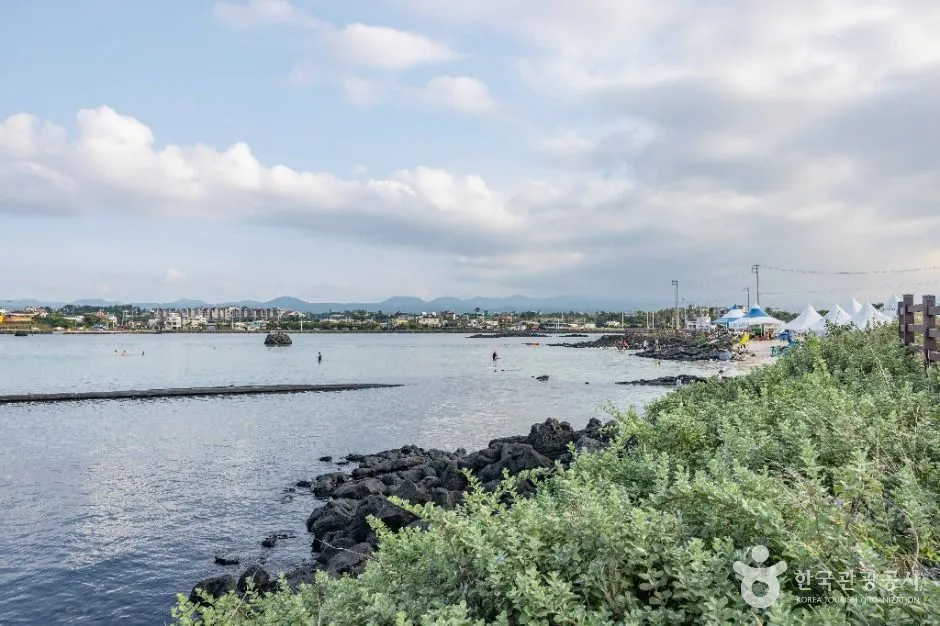
▲ 올레길 19코스의 해안 구간. 3일간 하루 11~13km 안팎을 걷는다. 사진=한국관광공사
보도에 따르면 올해는 이른바 '시즌1' 방식, 즉 수천 명이 한날 같은 길을 함께 걷는 대규모 축제의 마지막 회다. 제주올레는 길과 마을, 자연에 몰리는 부담을 줄이기 위해 2027년부터 23개 코스를 약 25일에 걸쳐 순차적으로 걷는 방식('시즌2')으로 바꿀 예정이라고 밝혔다. 즉 "올해로 올레걷기축제가 끝난다"가 아니라 "모두가 한 장소에 모이는 3일짜리 형식이 올해로 끝난다"가 맞다. 이 개편 계획은 언론 보도로 확인했고, 시즌2의 세부 일정과 참가비는 확인하지 못했다.
| 항목 | 내용 | 출처 |
|---|---|---|
| 기간 | 11월 5일(목)~7일(토), 3일간 | 공식 안내 |
| 코스 | 제주올레 19코스, 19~20코스 연결 구간, 20코스(역방향) | 공식 안내 |
| 주최·주관 | 제주특별자치도, 사단법인 제주올레 | 공식 안내 |
| 슬로건 | "올레길에서 행복하라" | 언론 보도 |
| 신청 방법 | 공식 앱 "올레패스"에서 참가 신청 | 공식 안내 |
| 문의 | 제주올레 콜센터 064-762-2190, jejuolle@jejuolle.org | 공식 안내 |
| 공식 기념품 | 스카프·코스별 라벨 꾸러미·가방·스포츠 타월 등. 참가일수와 관계없이 1인 1개, 등록부스에서 본인 확인 후 수령(공식 페이지는 연출 컷이며 변경될 수 있다고 명시) | 공식 안내 |
| 공식 안내 페이지 | ollepass 축제 안내(1~3일차, 교통정보, 여행준비) | 공식 안내 |
일정·교통·신청 공지는 제주올레 공식 축제 안내 페이지에서 볼 수 있다. 2026 제주올레걷기축제 공식 안내 바로가기
ℹ️ 날짜와 코스는 출처마다 같다
공식 안내와 서울신문(2026년 7월 8일)·제이누리·제주도민일보 보도 모두 11월 5~7일, 19·20코스 3개 구간으로 같게 전한다. 다만 1일차 도착지는 보도에서 "동복리 체육공원", 공식 코스 안내에서는 "동복리 체육센터"로 표기가 다르다. 같은 동복리 일대 종점으로 보이지만 정확한 명칭은 공식 표기를 따랐다. 1일차 출발지도 제이누리 보도는 "조천운동장", 공식 안내와 교통 안내는 "조천만세동산(조천리 1141)"으로 쓴다. 이 글은 공식 표기를 따랐다.
2. 신청·요금 — 10월 9일 마감, 이후엔 5천 원 더
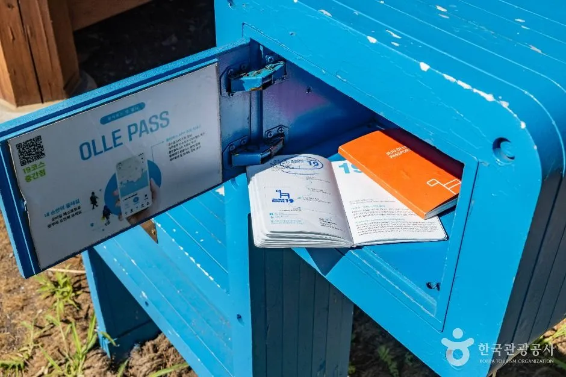
▲ 신청부터 스탬프까지 앱과 패스포트로 이어진다. 파란 스탬프 함에 올레패스 안내가 붙어 있다. 사진=한국관광공사
공식 안내에 따르면 사전 참가 신청 기간은 7월 8일(수)~10월 9일(금)이고, 올레패스 앱의 "참가신청" 버튼으로 결제한다. 일반 참가비는 3만 원, 20인 이상 단체·2008년 이후 출생 청소년·장애인·국가유공자는 2만 5천 원이다. 사전 신청자는 각 코스 시작점 등록부스에서 앱의 QR을 보여주고 공식 기념품을 받는다. 사전 신청 기간이 끝난 뒤에는 각 코스 시작점 등록부스에서 현장 접수·결제를 하며, 공식 안내 기준 일반 3만 5천 원·할인 3만 원이고 결제는 현금만 가능하다. 현장 신청은 기념품 수량에 따라 조기 마감될 수 있다고 공식 페이지가 적었다.
참가비가 "하루만 걸어도 3만 원"이라는 표현은 공식 페이지에서 직접 확인하지 못했다. 공식 신청·요금 안내에는 일차별 차등이나 1일권 구분이 없고, 기념품이 "참가일수와 관계없이 1인 1개"라는 문구만 있다. 하루 단위 참가 요금이 같다는 설명은 여행 정보 매체 travelmapjourney가 8월 17일 기준 공식 안내를 확인했다며 쓴 글에서 나왔고, 제이누리·트위그24 기사에서는 해당 문구를 찾지 못했다. 이 글은 일반 참가비를 "3만 원"으로만 적고, 하루만 참가할 계획이라면 신청 전에 올레 콜센터(064-762-2190)로 확인하라고 권한다.
| 구분 | 내용 | 확인 출처 |
|---|---|---|
| 사전 신청 기간 | 7월 8일~10월 9일(금) | 공식 안내 |
| 일반 참가비 | 30,000원(일차별 요금 구분은 공식 페이지에 없음. "하루만 참가해도 동일"은 여행 정보 매체 보도 기준, 미확인) | 공식 안내 / 여행 매체(하루 요금) |
| 할인 참가비 | 25,000원(20인 이상 단체, 2008년 이후 출생, 장애인, 국가유공자) | 공식 안내 |
| 현장 신청 | 각 코스 시작점 등록부스에서 접수·결제. 일반 35,000원, 할인 30,000원, 현금만 가능, 기념품 수량에 따라 조기 마감 가능 | 공식 안내 |
| 취소 가능 기간 | 10월 19일(월)까지, 앱 "나의 신청내역" | 공식 안내 |
| 결제 | 올레페이, 국내외 신용카드, 간편결제 | 공식 안내 |
| 10월 9일 마감 시각 | 참가 신청은 날짜만 표기. 공식 페이지의 "17:00"은 자원봉사 신청(7/8~8/28)에만 붙어 있다. 당일 자정까지인지는 확인하지 못함 | 공식 안내(시각 미표기) |
✅ 마감 임박 — 오늘 할 일
· 참가 신청 마감 시각은 날짜만 적혀 있다. 당일 몇 시까지인지는 공식 페이지에서 확인되지 않으니 10월 9일 낮에 끝내는 것을 권한다
· 마감 시각이나 하루 단위 참가 요금이 궁금하면 올레 콜센터 064-762-2190(공식 페이지 표기)에 확인한다
· 셔틀 탑승권(4천 원)과 점심 식권도 같은 10월 9일까지 앱으로 신청하고, 둘 다 조기 마감될 수 있다
· 마감을 놓쳐도 현장 신청이 있지만 요금이 5천 원 비싸고 현금만 받으며, 셔틀·식권은 앱 사전 구매만 가능하다
ℹ️ 참가비를 안 내도 걸을 수는 있다
공식 안내는 이 축제를 "누구나 참여할 수 있는 이동형 도보여행 축제"라고 소개하되, 공식 기념품을 포함한 일부 이벤트 혜택은 사전 참가 신청(유료)자에게만 준다고 못 박았다. 코스를 따라 걷는 것 자체와 참가 신청의 관계, 안내 인력 지원 범위 등은 공식 페이지에 자세히 나와 있지 않아 확인하지 못했다.
3. 3일 코스 — 거리·소요 시간·출발과 도착
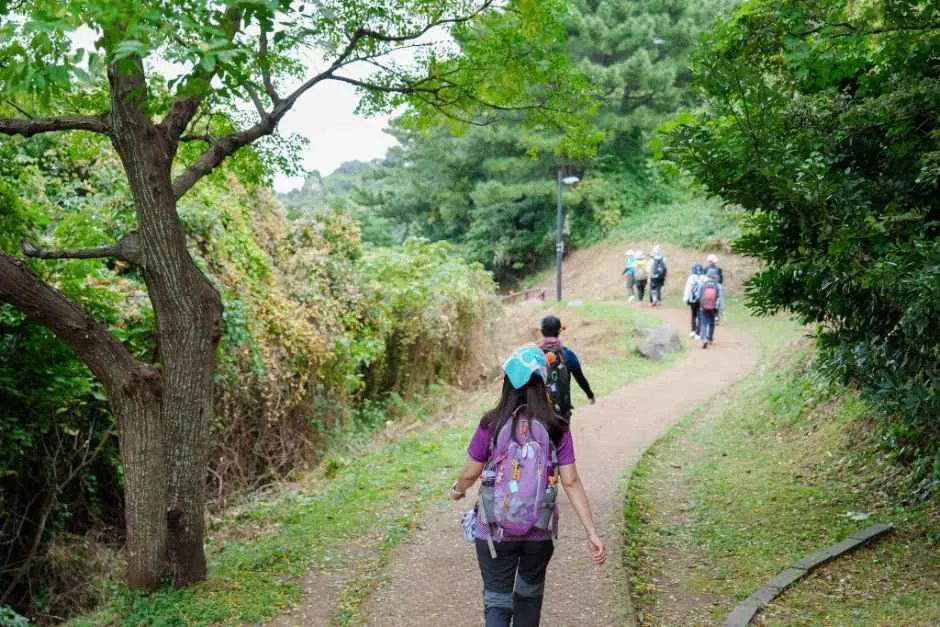
▲ 코스에는 해안길뿐 아니라 숲길과 농로 구간도 섞여 있다. 사진=한국관광공사
공식 코스 안내의 세 구간은 모두 난이도 ★★☆(3점 만점)로 표기돼 있고, 소요 시간은 "올레꾼 평균 도보 속도 시간당 2.5~3km" 기준이다. 사흘 합계는 13km, 11.5km, 12.9km로 약 37.4km다. 모든 일정이 끝나는 오후 5시까지 종점에 도착하라고 안내한다.
| 구분 | 1일차 11월 5일(목) | 2일차 11월 6일(금) | 3일차 11월 7일(토) |
|---|---|---|---|
| 코스 | 19코스(정방향) | 19~20코스(정방향) | 20코스(역방향) |
| 출발 | 조천만세동산(제주시 조천읍 조천리 1141) | 동복리 체육센터(제주시 구좌읍 동복리 1717 일원) | 제주해녀항일운동기념공원(제주시 구좌읍 상도리 471-31) |
| 점심 | 해동포구(조천읍 북촌리 1490) | 구좌체육관(구좌읍 김녕리 497-1) | 행원리어촌계(구좌읍 행원리 575-15) |
| 도착 | 동복리 체육센터 | 제주밭담테마공원(구좌읍 월정리 1400-14) | 제주밭담테마공원 |
| 거리 | 13km | 11.5km | 12.9km |
| 소요 시간 | 4~5시간 | 3.5~4시간 | 4~5시간 |
| 난이도 | ★★☆ | ★★☆ | ★★☆ |
| 주요 구간(공식) | 함덕해변, 서우봉, 너븐숭이 4.3기념관 일대 | 소나무 숲길, 김녕농로, 김녕서포구(20코스 시작점), 고장난길 | 세화~월정 해안길 |
| 셔틀 막차(공식 코스 안내) | 16:00 | 17:10 | 15:30 |
1일차는 함덕해변과 서우봉을 지나 북촌리 너븐숭이 4.3기념관 일대를 거쳐 동복리로 간다. 2일차는 소나무 숲길과 김녕농로를 지나 20코스 시작점인 김녕서포구에 닿고, 3일차는 해녀항일운동기념공원에서 세화~월정 해안길을 따라 역방향으로 걷는다. 3일차 오전에는 기념품 수령 부스가 해녀항일운동기념공원에 차려진다는 안내가 있다.
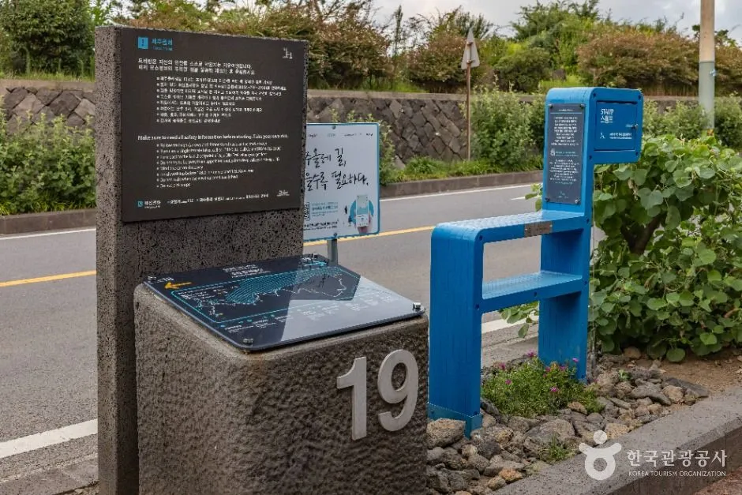
▲ 1일차에 걷는 19코스의 안내판과 파란 간세 의자. 코스 번호가 새겨져 있다. 사진=한국관광공사
시간 계산. 공식 소요 시간 기준(시간당 2.5~3km)에 셔틀 시간을 겹쳐 보면, 제주시 승차장에서 1일차 09:00~09:20에 타면 시작점에는 09:30~09:50쯤 닿는다. 13km를 4~5시간 걸으면 점심 시간을 빼도 오후 2시 전후~3시대 도착이라 16:00 막차에는 여유가 있다. 반면 3일차는 제주시 08:30~08:50 승차 후 시작점 도착이 09:35~09:55 전후(교통 안내의 소요 1시간 5분 기준)이고 막차는 15:30이라, 12.9km를 4~5시간 걷는 데다 점심까지 먹으면 여유가 가장 적다. 이는 공식 수치를 더한 단순 계산이며 등록부스 대기·기념품 수령 시간은 포함하지 않았다.
| 항목 | 확인된 내용 |
|---|---|
| 화장실 | 공식 3개 페이지에 지점별 위치는 없다. 여행준비 안내에 각 코스 시작점 표지석에 전체 경로·경유지·화장실 위치가 그려져 있다는 설명만 있다 |
| 급수 | 급수대 위치는 확인하지 못함. 재활용 컵·텀블러 지참자에게 축제 기간 무료 차·음료를 준다는 안내만 있다 |
| 점심 | 사전 예약자에 한해 마을 점심 제공(1일차 해동포구, 2일차 구좌체육관, 3일차 행원리어촌계). 식권 가격은 6장 참조 |
| 프로그램 시간표 | 2026년 일자별 공연·체험 시간표는 "추후 공개 예정"이다. 공식 페이지에 남아 있는 시간표 문구는 2025년 내용이라 싣지 않았다 |
QR 스탬프 투어는 올레패스 앱 전용 이벤트로 안내돼 있으나 2026년 세부 운영은 공식 페이지에서 확인하지 못했다.
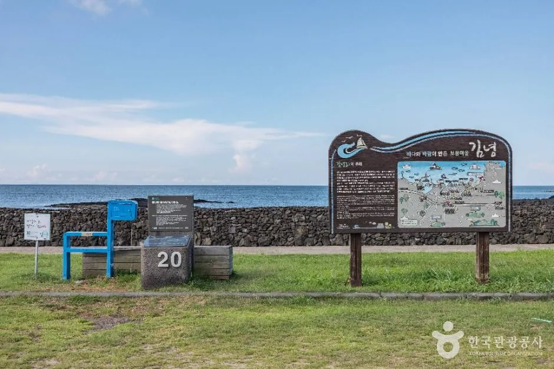
▲ 김녕 구간의 안내판. 19코스는 여기서 끝나고 20코스가 시작된다. 사진=한국관광공사
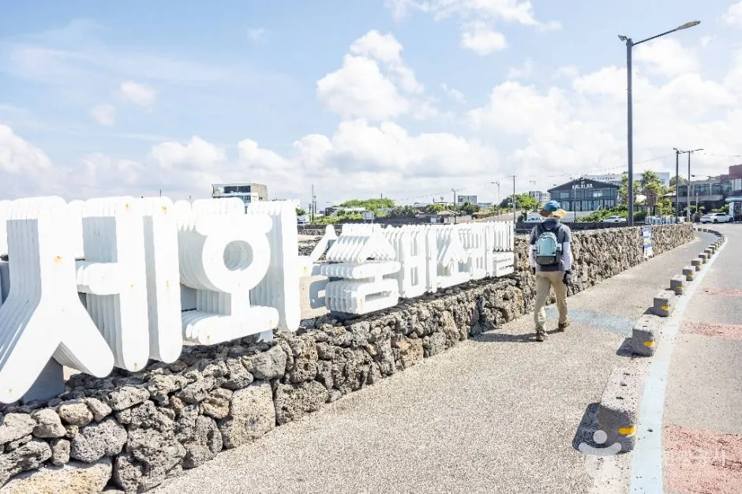
▲ 세화 해변 앞 돌담길과 조형물. 3일차는 20코스의 세화~월정 해안길을 역방향으로 걷는다. 사진=한국관광공사
✅ 3일차 역방향 걷기 요령
· 공식 여행준비 안내: 파란 화살표는 정방향, 주황색 화살표는 역방향 진행 방향이다. 3일차는 주황색을 따라가면 된다.
· 간세(조랑말 표지) 머리가 향한 쪽이 정방향이다. 역방향 날에는 반대로 걷는다는 점을 기억해 두자.
· 공식 코스 안내는 프로그램이 기상·출연자 사정에 따라 바뀔 수 있다고 밝혔다.
4. 셔틀버스 — 편도 4천 원, 앱에서만 산다
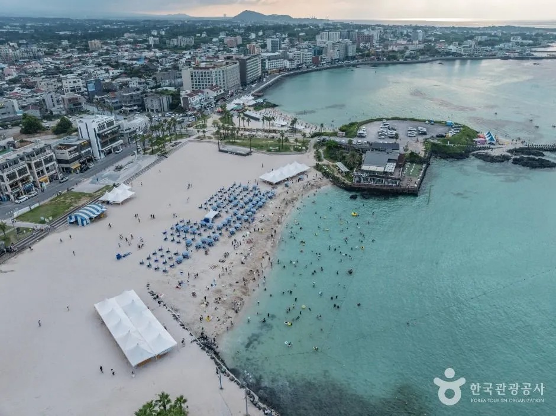
▲ 2일차 점심 장소와 19·20코스 연결 지점이 있는 김녕 일대. 코스 사진으로 제공된 전경이다. 사진=한국관광공사
공식 교통 안내의 핵심은 "행사장 주변에 주차장이 없으므로 가급적 축제 셔틀버스 또는 대중교통을 이용하라"는 문장이다. 탑승권은 올레패스 앱에서만 사고(현장 현금 구매 불가), 제주시·서귀포시 구간 편도 4천 원이고, 공식 안내상 13세 이하(초등 6학년까지) 어린이는 무료다. 첫차 출발 뒤 4~5분 간격으로 운행하고 만차 시 출발한다. 탑승권을 잃어버려도 현장에서 다시 살 수 없다. 개인 짐은 행사장과 셔틀버스 모두 보관할 수 없다.
| 구간 | 탑승 장소 | 탑승 시간 | 소요 시간 |
|---|---|---|---|
| 제주시 → 조천만세동산 | 제주시민복지타운광장 주차장 입구 | 09:00~09:20 | 30분 |
| 제주공항 → 조천만세동산 | 제주국제공항 대형버스 주차장 C10 구역 | 08:50~09:10 | 35분 |
| 서귀포 → 조천만세동산 | 제주월드컵경기장 광장 옆(서문로터리 경유) | 07:50~08:10 | 1시간 25분 |
| 서귀포 → 조천만세동산 | 서문로터리(서문로 1호광장 방향) | 08:00~08:20 | 1시간 15분 |
| 동복리 체육센터 → 제주시 | 제주시민복지타운광장 주차장 입구 도착 | 16:00~16:20 | 40분 |
| 동복리 체육센터 → 서귀포 | 서문로터리(경유)/서귀포 이마트 앞 도착 | 16:00~16:20 | 1시간 30분 |
| 일차 | 가는 편(제주시 탑승) | 돌아오는 편(제주시 하차) |
|---|---|---|
| 2일차(11월 6일) | 제주시민복지타운광장 08:50~09:10 → 동복리 체육센터, 40분 | 제주밭담테마공원 15:00~15:20 → 제주시, 55분 |
| 3일차(11월 7일) | 제주시민복지타운광장 08:30~08:50 → 해녀항일운동기념공원, 1시간 5분 | 제주밭담테마공원 15:30~15:50 → 제주시, 55분 |
| 제주공항(C10 구역) | 2일차 08:40~09:00(소요 45분), 3일차 08:20~08:40(소요 1시간 10분) | 공항으로 돌아가는 노선은 공식 교통 안내에 없음 |
| 서귀포 방면 | 2일차 07:50~08:20(월드컵경기장 옆 07:50~08:10 소요 1시간 30분, 서문로터리 08:00~08:20 소요 1시간 20분), 3일차 07:40~08:10(각각 1시간 35분, 1시간 25분) | 돌아오는 편은 2일차 15:00~15:20, 3일차 15:30~15:50, 소요 1시간 40분(서문로터리·서귀포 이마트 앞 하차) |
ℹ️ 2일차 귀가 셔틀 시간이 두 곳에서 다르다
공식 교통 안내에는 2일차 제주밭담테마공원 출발 시간이 15:00~15:20으로 적혀 있는데, 같은 사이트 2일차 코스 안내는 셔틀 막차를 17:10으로 표기한다. 1일차(코스 안내 16:00, 교통 안내 16:00~16:20)와 3일차(코스 안내 15:30, 교통 안내 15:30~15:50)는 두 페이지가 맞아떨어지는데 2일차만 어긋난다. 어느 쪽이 맞는지 확인하지 못했다. 2일차 셔틀을 탈 계획이라면 앱 공지나 콜센터(064-762-2190)로 확인하고, 안전하게 오후 3시대 출발 기준으로 일정을 잡는 편이 낫다.
5. 자차 이용자 — 차는 어디에 두고, 어떻게 회수하나
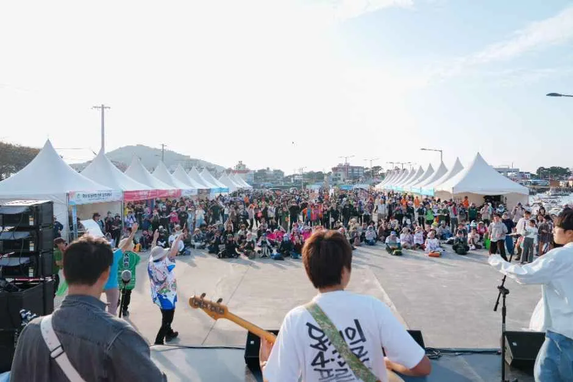
▲ 이전 축제 때 촬영한 사진(올해 사진 아님). 행사장 한쪽에서는 공연과 장터가 열렸다. 사진=한국관광공사
이 축제는 출발지와 도착지가 다르다. 걷고 나면 차를 세운 곳과 몇 km 떨어진 종점에 있다는 뜻이다. 공식 안내는 행사장 주변에 주차장이 없다고 했고, 시작점·점심·종점 별 주차 가능 대수나 요금은 어디에서도 확인하지 못했다. 그래서 자가용으로 가는 사람은 네 가지 선택지를 놓고 고르게 된다. 아래는 공식 셔틀 정보를 바탕으로 정리한 판단 근거이고, 각 방법의 실제 가능 여부는 일부 확인하지 못했다.
| 방법 | 흐름 | 장점 | 확인 필요 |
|---|---|---|---|
| A. 셔틀 + 시내 주차 | 제주시민복지타운광장 승차장 인근에 세우고 셔틀로 왕복 | 출발·귀가 모두 같은 지점, 차 회수 문제 없음 | 승차장 인근 주차 가능 여부·장시간 주차 요금, 확인하지 못함 |
| B. 시작점까지 운전, 종점에서 이동 | 시작점에 주차 후 걷고, 종점에서 다른 수단으로 복귀 | 셔틀비 절약 | 시작점 주차 불가(공식), 종점→시작점 이동 수단은 확인하지 못함 |
| C. 렌터카 반납 후 셔틀 | 공항 대형버스 주차장 C10 승차장에서 탑승(1일차 08:50~09:10, 2일차 08:40~09:00, 3일차 08:20~08:40) | 렌터카를 먼저 반납하고 걸을 수 있다 | 귀가 셔틀은 공항행이 없고 제주시민복지타운광장·서문로터리 등에 내린다. 시내에서 공항·숙소까지 이동 수단과 반납 시간은 업체 확인 |
| D. 대중교통·택시 | 공식 안내가 가급적 권장하는 방법 | 주차 걱정 없음 | 운행 노선·소요 시간은 확인하지 못함 |
현실적인 답은 A나 C다. 어느 쪽이든 셔틀 탑승권은 앱에서 미리 사야 하고, 사전 판매는 조기 마감될 수 있다는 안내가 있다. 렌터카를 쓴다면 공항 승차장(제주국제공항 대형버스 주차장 C10)에서 타는 방식이 공식 노선에 이미 들어 있다. 다만 돌아오는 셔틀은 공항이 아니라 제주시민복지타운광장 주차장 입구나 서문로터리·서귀포 이마트 앞에 내려 주므로, 렌터카를 일정 마지막 날 반납하려면 하차 후 공항까지 별도로 가야 한다. 공항 반납 마감 시각과 시내 반납 가능 여부는 이 글에서 확인하지 못했다. 내비 목적지는 시작점 주소(조천만세동산 조천리 1141, 동복리 체육센터 동복리 1717 일원, 해녀항일운동기념공원 상도리 471-31)로 찍을 수 있지만 행사장 주변 주차장이 없다는 공식 안내를 감안해야 한다. 차량 비용과 렌터카 조건은 제주 렌터카와 자차 비용 비교 기사에 정리해 두었다.
✅ 자차 이용자 체크리스트
· 셔틀 탑승권, 식권, 참가 신청은 모두 10월 9일 사전 신청 마감을 기준으로 앱에서 같이 처리한다(식권과 셔틀은 조기 마감 가능)
· 3일 모두 같은 승차장에서 타고 같은 곳에 돌아오는 구조라, 시내에 차를 한 곳에 세워 두는 방식(A)이 가장 단순하다
· 1일차 서귀포 쪽 승차는 07:50~08:20대로 이르다. 서귀포에서 출발하는 자차 이용자는 아침 일정을 넉넉히 잡아야 한다
· 개인 짐은 셔틀과 행사장 모두 보관할 수 없으므로 차 안에 두고 가벼운 배낭만 지참한다
· 귀가 셔틀 도착지(제주시민복지타운광장 주차장 입구)와 주차해 둔 곳이 일치하는지 출발 전에 지도로 확인한다
6. 준비물·날씨·점심 — 11월 초 제주의 바람
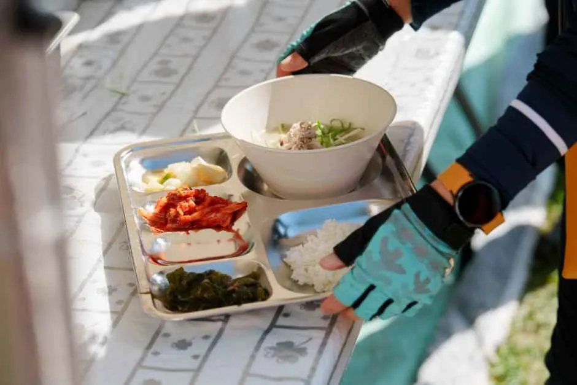
▲ 점심은 마을이 준비한다. 식권은 사전 구매자에 한해 제공된다. 사진=한국관광공사
공식 여행준비 안내에서 가장 먼저 나오는 경고는 바람이다. 11월 제주는 바람이 많이 불고 하루에도 날씨가 자주 바뀐다고 적었다. 따뜻한 복장과 우비, 그리고 오름이나 현무암 길을 걸어도 발이 편한 "내 발에 길든 트레킹화"를 권한다. 구체적인 기온·강수 전망은 이 글을 쓴 시점에서 확인하지 못했다. 11월 제주 평년 기온과 강수량은 기상청 자료로 확인하지 못해 수치를 싣지 않았고, 출발 직전 기상예보를 확인해야 한다. 프로그램은 기상 상태에 따라 변경될 수 있다고 공식 코스 안내가 밝혔고, 우천 시 운영 방침은 확인하지 못했다.
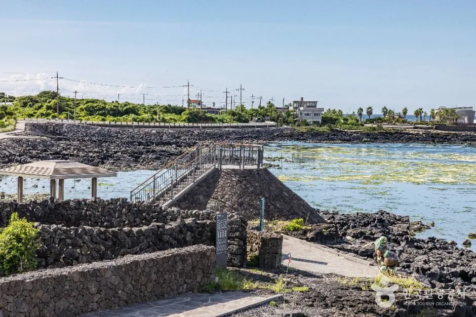
▲ 돌담과 바닷가 포구가 이어지는 19코스 해안 구간. 탁 트인 바닷가 길이라 공식 안내가 강조한 바람 대비가 필요하다. 사진=한국관광공사
| 항목 | 내용 |
|---|---|
| 올레패스 앱 | 신청·식권·셔틀·QR 스탬프 투어에 사용, 5개 언어 지원 |
| 컵·텀블러 | 재활용 컵이나 텀블러를 가져온 경우에만 축제 기간 무료 차·음료 제공 |
| 복장 | 바람막이 등 따뜻한 복장, 우비 |
| 신발 | 발에 길든 트레킹화 권장 |
| 현금 | 현장 참가 신청(35,000원·할인 30,000원)은 현금만 받는다 |
| 교통카드 | 셔틀 탑승권을 사전 구매하지 않았다면 대중교통 이용 권장 |
| 보험 | 여행자 보험 가입 권장(안전은 참가자 책임) |
| 쓰레기 | 자기가 만든 쓰레기는 가져오기 |
| QR 스탬프 투어 | 올레패스 앱 전용 이벤트. 2026년 세부 운영은 확인하지 못함 |
| 점심 식권(일반식) | 1일차 북촌리 뭉게죽 12,000원, 2일차 김녕양파톳김밥 10,000원, 3일차 행원바당 전복비빔밥 12,000원 |
| 점심 식권(채식) | 1일차 톳두부죽 10,000원, 2일차 양파톳김밥 10,000원, 3일차 버섯비빔밥 10,000원 |
| 식권 구매 | 앱 사전 신청(10월 9일까지), 한정 판매·조기 마감 가능, 개인 식기 지참 권장 |
7. 숙소·이동 — 어디서 자고 어떻게 움직이나
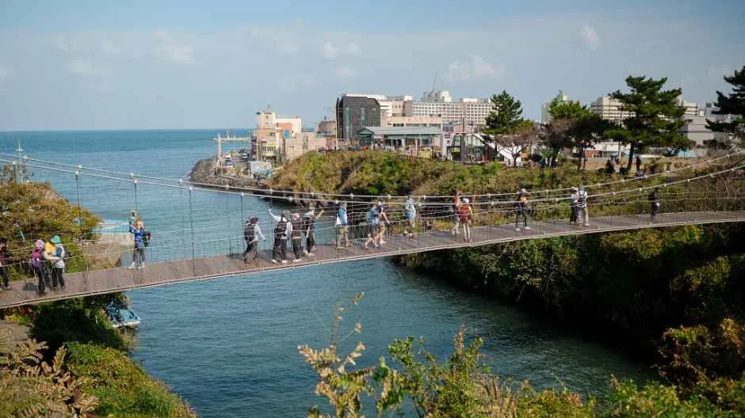
▲ 해안을 따라 걷는 길 위에서 만나는 출렁다리 풍경. 코스별로 해안·마을·숲길이 번갈아 나온다. 사진=한국관광공사
사흘 모두 같은 승차장에서 셔틀을 타고 오가는 방식이라면 숙소는 제주시 시내가 편하다. 반대로 서귀포 쪽에서 묵으면 1일차 첫 승차가 07:50~08:20대로 이르고 편도 1시간 15~25분이 걸린다. 구좌읍·조천읍 쪽에 숙소를 잡으면 이동은 줄지만, 이 경우 셔틀 승차 지점과 거리가 멀어질 수 있어 주차·이동 방법을 미리 정해야 한다. 공식 코스 안내의 1일차 "주변 숙소·식당" 목록에는 김녕항 인근 숙박업소(고래 stay, 김녕항3길 32-4)와 조천읍 식당(다래향, 정순화손두부) 등이 올라 있다. 가격과 예약 가능 여부는 확인하지 못했다.
| 숙소 권역 | 장점 | 주의점 |
|---|---|---|
| 제주시 시내 | 셔틀 승차장(시민복지타운광장)·공항 승차장이 가깝다. 3일 모두 제주시 승차는 08:30~09:20 사이이고 귀가편도 제주시 하차 한 곳이라 차 회수가 단순하다 | 1일차 09:00 전후 승차, 3일차는 08:30~08:50 |
| 서귀포 | 공식 서귀포 노선(월드컵경기장 옆·서문로터리) 이용 | 1일차 07:50~08:20, 편도 1시간 15분 이상 |
| 조천·함덕·김녕 일대 | 코스와 가깝고 이동이 짧다 | 행사장 주변 주차장 없음(공식), 셔틀 승차 연계는 확인하지 못함 |
축제 기간에 차로 제주 다른 곳도 도는 일정이라면 억새 철 명소와 드라이브 코스도 같이 볼 만하다. 따라비오름 억새 가이드, 제주 1100도로 드라이브 코스를 참고하면 되고, 숙박을 차 안에서 해결하려는 생각이라면 제주 차박 가능 장소와 과태료 정리 기사를 먼저 읽어 보자. 올레길 주변 노지 차박 단속 현황은 이 글에서 확인하지 못했다. 걷기 전후로 서쪽으로 이동할 일정이라면 새별오름 억새 기사와 오설록·카멜리아힐 반나절 코스를 참고할 수 있다. 10월 하순 제주 전국체전 주간의 혼잡과 렌터카 사정은 체전·탐라문화제 주간 가이드에 따로 정리했다.
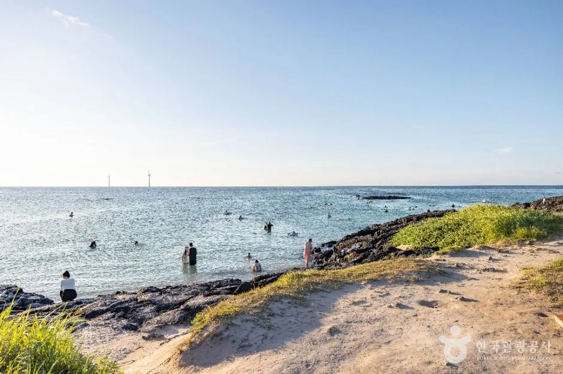
▲ 모래 언덕과 바위가 이어지는 올레길 해안 풍경(한국관광공사 코스 사진). 해안 구간에서는 시야를 가릴 것이 많지 않다. 사진=한국관광공사
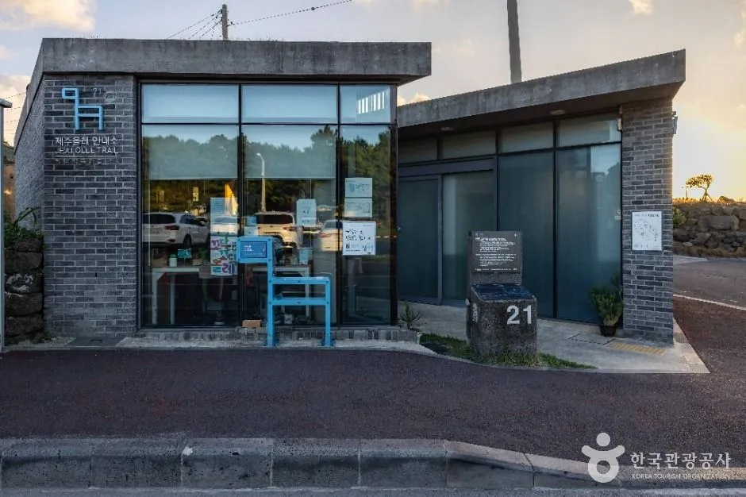
▲ 20코스 종점·21코스 시작점 일대의 스탬프 쉼터(안내판에 21이 보인다). 올레 패스포트에는 코스별로 시작·중간·종점 스탬프를 찍는다. 사진=한국관광공사
✅ 출발 전 체크리스트
· 10월 9일(금) 사전 신청 마감, 마감 시각은 날짜만 표기(낮에 끝내기 권장). 취소는 10월 19일(월)까지
· 참가비 3만 원(할인 2만 5천 원), 현장 신청 일반 3만 5천 원·할인 3만 원(현금만, 공식 안내)
· 셔틀 4천 원은 앱 사전 구매만 가능, 식권도 앱 사전 구매
· 코스: 5일 13km, 6일 11.5km, 7일 12.9km(역방향), 각 3.5~5시간, 오후 5시까지 종점
· 2일차 귀가 셔틀 시간은 15:00~15:20(교통 안내)과 17:10(코스 안내)이 달라 확인 필요
· 컵·텀블러, 바람막이, 우비, 트레킹화, 개인 짐은 보관 불가
8. 요약
제주올레걷기축제는 11월 5~7일 19·20코스 일원에서 열리고, 사전 신청은 10월 9일(금)까지 올레패스 앱으로 받는다. 일반 참가비는 3만 원이고(하루 단위 참가 시 동일 요금이라는 내용은 공식 페이지에서 확인하지 못했다), 현장 신청은 일반 3만 5천 원·할인 3만 원(현금만)이다. "마지막 축제"는 대규모 집단 걷기 형식의 마지막이며, 2027년부터 23개 코스를 25일간 걷는 방식으로 바뀔 예정이라고 전해진다.
자가용 이용자는 공식 안내가 행사장 주변에 주차장이 없다고 한 점이 가장 중요하다. 셔틀(편도 4천 원, 앱 사전 구매)을 타고 3일 모두 같은 승차장으로 돌아오는 방식이 차 회수 문제가 가장 적다. 행사장 주변과 승차장 인근 주차 가능 여부·요금, 마감 시각(날짜만 표기), 2일차 귀가 셔틀 정확한 시간(15:00~15:20과 17:10 중), 11월 평년 기온과 날씨 전망은 확인하지 못했다.